n64-xibalba-64
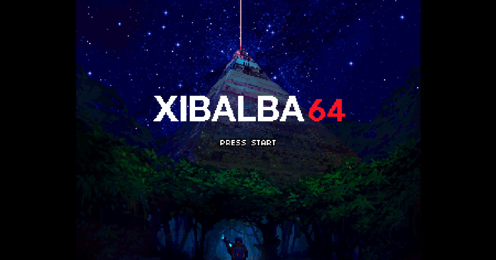
og-image.jpg 1200x630 · 100 KB · og-image

photo-01.avif 2000x1334 · 132 KB · photo

photo-02.avif 2000x1333 · 109 KB · photo

photo-03.avif 2000x1333 · 45 KB · photo

photo-04.avif 2000x2000 · 221 KB · photo

photo-05.avif 2000x1329 · 266 KB · photo
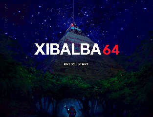
scr-01.webp 313x240 · 30 KB · screenshot
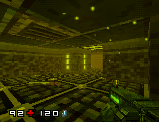
scr-02.webp 313x240 · 25 KB · screenshot
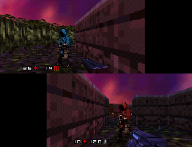
scr-03.webp 313x240 · 28 KB · screenshot
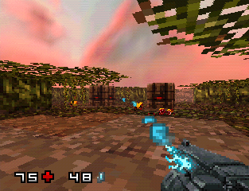
scr-04.webp 313x240 · 45 KB · screenshot
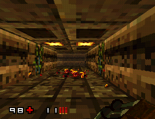
scr-05.webp 313x240 · 28 KB · screenshot
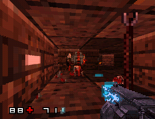
scr-06.webp 313x240 · 30 KB · screenshot
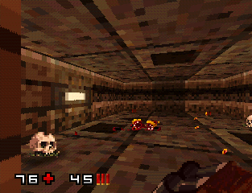
scr-07.webp 313x240 · 34 KB · screenshot
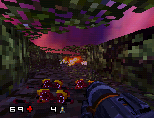
scr-08.webp 313x240 · 38 KB · screenshot
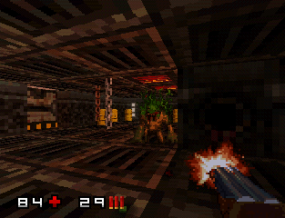
scr-09.webp 313x240 · 28 KB · screenshot
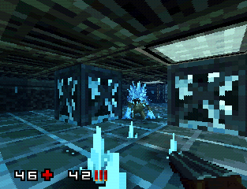
scr-10.webp 313x240 · 35 KB · screenshot
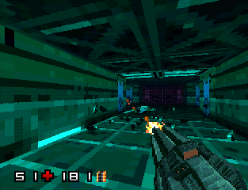
scr-11.webp 313x240 · 25 KB · screenshot
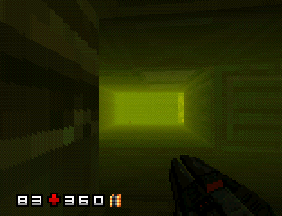
scr-12.webp 313x240 · 15 KB · screenshot
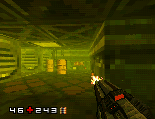
scr-13.webp 313x240 · 25 KB · screenshot
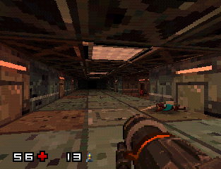
scr-14.webp 313x240 · 32 KB · screenshot
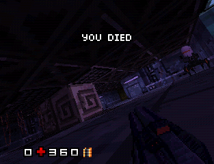
scr-15.webp 313x240 · 25 KB · screenshot
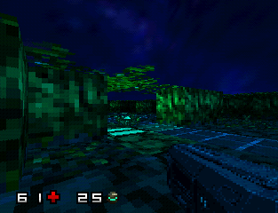
scr-16.webp 313x240 · 24 KB · screenshot
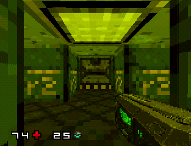
scr-17.webp 313x240 · 19 KB · screenshot
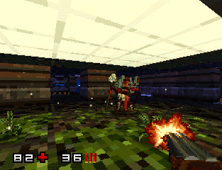
scr-18.webp 313x240 · 31 KB · screenshot